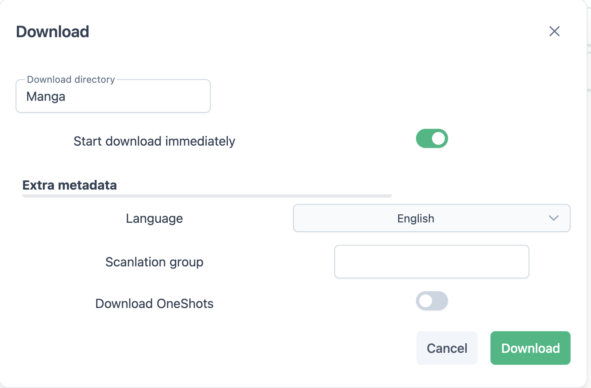

Mangadex (mangadex)
Media-Provider supports downloading manga's from mangadex, you may specify a language to download from. If your language is missing, please add it here and open a pull request
You may add as many manga's as you want, but only one will be downloaded at a time, the rest is added in a queue.
They will automatically start downloading after. Once a manga's has fully downloaded,
Media-Provider wil zip them per chapter, into .cbz files with the following layout Title Ch. ?.cbz. They will be
grouped into directories per volume. If a chapter currently has no volume, and is assigned one when you download the
same series at a later point in time; Media-Provider will remove the previously downloaded chapter, and redownload it.
Example
- Spice And Wolf
- Spice and Wolf Vol. 1
- Spice and Wolf Ch. 1.cbz
- Spice and Wolf Ch. 2.cbz
- Spice and Wolf Vol. 2
- Spice and Wolf Ch. 3.cbz
- Spice and Wolf Ch. 4.cbz
- Spice and Wolf Ch. 5.cbz
Chapter 5 may be redownloaded into Spice and Wolf Vol 3/Spice and Wolf Ch. 5.cbz at later time.
Covers
Media-Provider will add covers to the .cbz file (if you've enabled it while downloading). Before writing a cover for a chapter, it'll check if the first page in the chapter is the same image. And if it is, and has a better quality, will skip writing the cover.
Download metadata
The mangadex provider allows for a few options to be set alongside which manga to download. You may - Choose the language you're downloading in - Choose to skip, or download one-shots - Choose a scanlation group*
*The system is currently not smart enough to provide you with the id/names of which scanlation are an option. You will have to provide these yourself from mangadex's site. Will check for scanlation group OR user

Config
Mangadex supports a lot of different filtering options, the following are currently support.
Include & Exclude tags (includeTags, excludeTags)
You may configure tags, the filter method is OR, so the manga will match at minimum one selected tag.
Add them as a search_modifier with key or , use the English name as key
Ex. - Official Colored - Girls' Love - Isekai
Check our implementation for the api endpoint if needed.
Status (status)
The following values are possible - ongoing - completed - hiatus - cancelled
Content Rating (contentRating)
The following values are possible - safe - suggestive - erotica - pornographic
Publication Demographic (publicationDemographic)
- shounen
- shoujo
- josei
- seinen